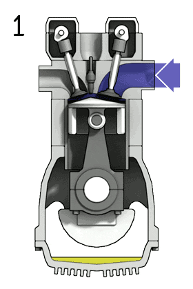

Istoria Motoarelor cu ardere interna
Ce este un motor cu ardere interna?
Motorul cu ardere internă este motorul care transformă energia chimică a combustibilului prin intermediul energiei termice de ardere, în interiorul motorului, în energie mecanică. Căldura degajată în camera de ardere se transformă prin intermediul presiunii (energiei potențiale) aplicate pistonului în mișcare mecanică ciclică, de obicei rectilinie, după care în mișcare de rotație uniformă, obținută de obicei la arborele cotit. Camera de ardere este un reactor chimic unde are loc reacția chimică de ardere.
